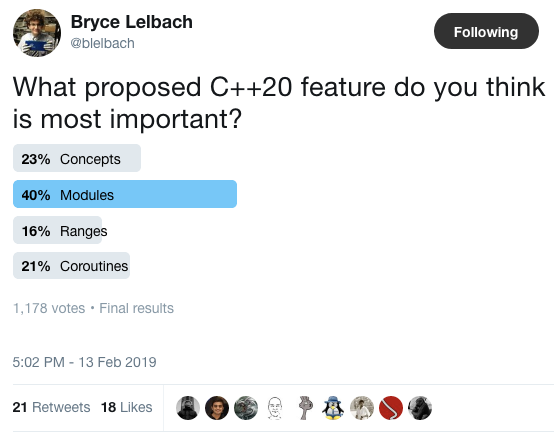
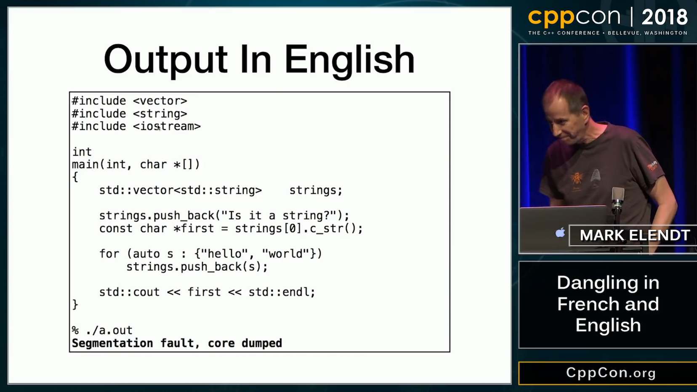

2019-02-21

https://www.reddit.com/r/cpp/comments/aq8rxf/bryce_lelbach_on_twitter_what_proposed_c20/
Reddit https://www.reddit.com/r/cpp/comments/au1skl/herbs_kona_trip_report_winter_iso_c_standards/
At our next meeting in July, we expect to formally adopt a few additional features that were design-approved at this meeting but didn’t complete full wording specification review this week <...> (formatting, flat_map etc.)
Bryce Lelbach:
TL;DR: C++20 may well be as big a release as C++11.



https://devblogs.microsoft.com/visualstudio/visual-studio-2019-release-candidate-rc-now-available/
https://cukic.co/2019/02/09/moving-iterators-in-cxx/
std::move_iteratoris an iterator adaptor which behaves exactly like the underlying iterator, except that dereferencing converts the value returned by the underlying iterator into an rvalue. (https://en.cppreference.com/w/cpp/iterator/move_iterator)
std::vector<fs::directory_entry> results;
auto dir_items = files_in_dir(...);
results.insert(results.end(), dir_items.cbegin(), dir_items.cend());James Renwick, Tom Spink, Björn Franke (University of Edinburgh)
In our novel C++ exception implementation we make use of a stack-allocated object that records the necessary run-time information for throwing an exception, such as the type and size of the exception object. This state is allocated in a single place and is passed between functions via an implicit function parameter injected into functions which support exceptions. The state is initialised by
throwexpressions, and is re-used to enable re-throwing.catchstatements use the state in order to determine whether they can handle the exception. After a call to a function which may throw exceptions, a run-time check is inserted to test whether the state containsan active exception.